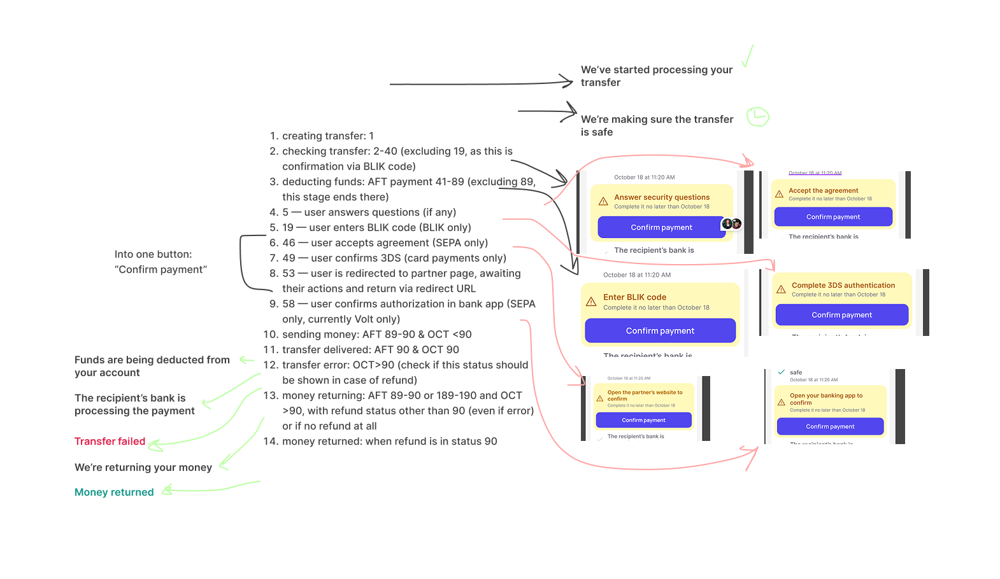
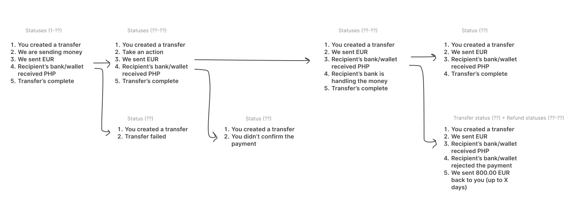
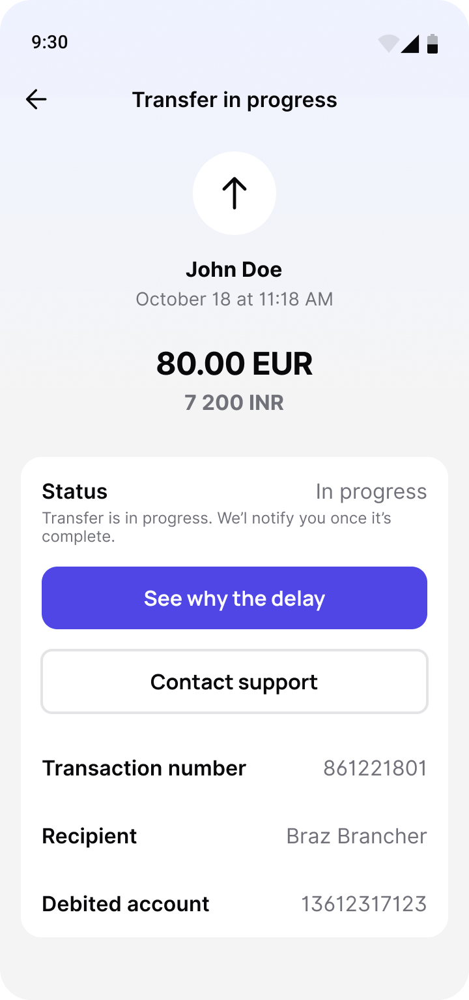
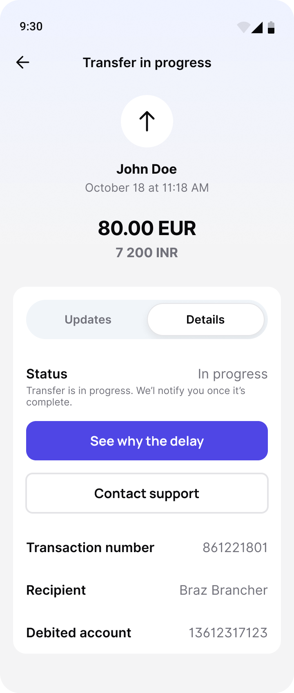
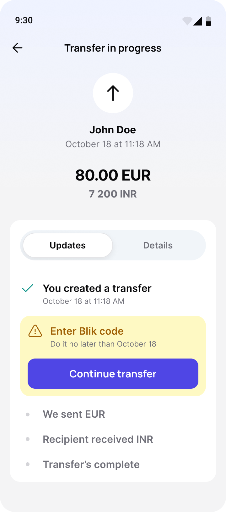
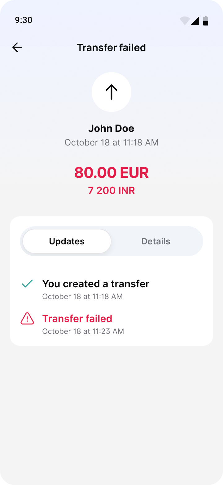
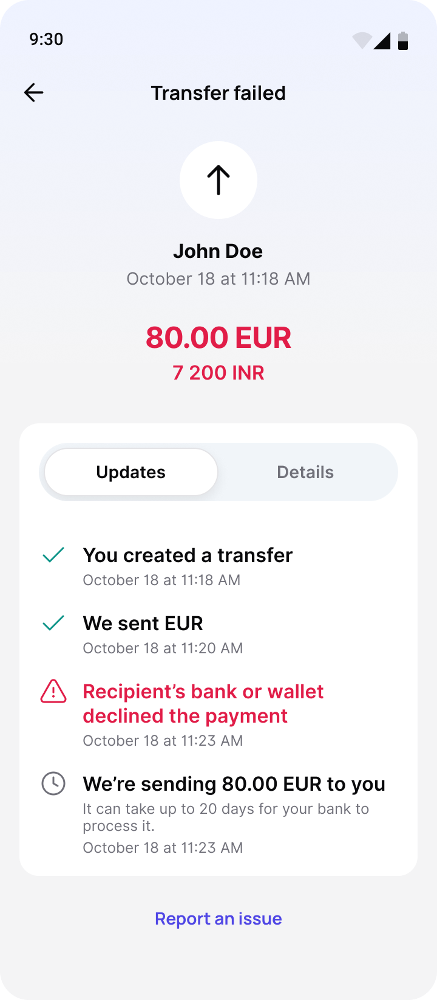
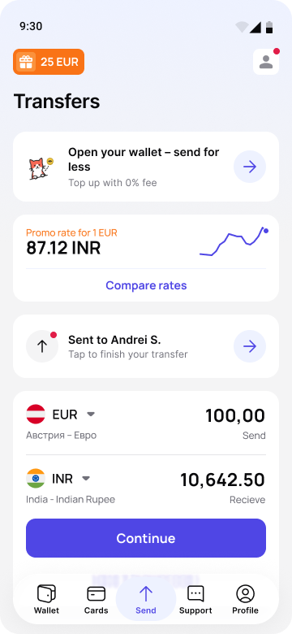

Profee · Oct – Dec 2025Октябрь–декабрь 2025
International transfers pass through several systems and can get delayed, fail or need something from the sender on the way. The transfer screen showed only the current status – no history and nothing about what came next. I added an Updates tab with the full history of every transfer, put the actions it needs right into that history, and later added a home-screen block that brings people back to a transfer waiting for them
Международный перевод проходит через несколько систем и по дороге может задержаться, сорваться или потребовать чего-то от пользователя. Экран перевода показывал только текущий статус – без истории и без того, что будет дальше. Я добавила вкладку «Статусы» со всей историей перевода, встроила в неё действия, которых перевод ждёт от человека, а позже – блок на главной, который возвращает к такому переводу
Context
Контекст
A transfer goes from the sender’s card through Profee’s exchange and a correspondent bank to the recipient’s bank or wallet. That can take seconds – or days
Перевод в Profee проходит через несколько систем: карта отправителя, конвертация в Profee, банк-корреспондент и банк или кошелёк получателя. Весь путь занимает от нескольких секунд до нескольких дней
Nobody waited for the transfer. People confirmed it, saw “Processing your transfer” and switched to another app. Whatever happened next – a delay, a refund, a request for a BLIK code – happened while they were gone
Перевод никто не ждал. Человек подтверждал его, видел «Обрабатываем перевод» и уходил в другое приложение. Всё, что случалось дальше – задержка, возврат, запрос кода BLIK, – происходило без него
When they came back, the screen showed a single line: the current status. No history – what had already happened, where the transfer was stuck, what was coming next. Yet the status screen is opened most often while a transfer is still in progress – 59% of views – exactly when that one line said the least
А когда он возвращался, на экране была одна-единственная строка – текущий статус. Никакой истории: что уже произошло, где перевод застрял, что будет дальше. При этом чаще всего экран статуса открывают, пока перевод ещё идёт, – 59% просмотров. Как раз тогда одна строка и говорила меньше всего
Two problems: people couldn’t see what was happening with the transfer, and didn’t know when it was waiting for them
Проблем было две: человек не видел, что происходит с переводом, и не знал, когда перевод ждёт его
Status map
Карта статусов
Before drawing the timeline, I had to work out what it was made of. A transfer has two technical statuses – the debit and the credit – with codes from 1 to 90, plus separate refund statuses. Together with the backend team, I split the codes into ranges and turned them into steps a person understands: transfer created, checking it’s safe, taking the money, the recipient’s bank has it, done. Failure, refund and money returned are separate branches
Прежде чем рисовать таймлайн, нужно было понять, из чего он состоит. У перевода два технических статуса – списания и зачисления – с кодами от 1 до 90, плюс отдельные статусы возврата. Вместе с бэкендом я разложила коды по диапазонам и свела их в шаги, понятные человеку: перевод создан, проверяем, что он безопасен, списываем деньги, банк получателя их получил, готово. Сбой, возврат и «деньги вернулись» – отдельные ветки
Six different user actions hide in those codes: answering questions, entering a BLIK code, accepting an agreement (SEPA), passing 3DS, finishing on a partner’s site, confirming in a banking app. I made them one pattern – a yellow card at the step where the transfer stopped, with its own title and the same single button. On the board it’s still “Confirm payment”; in the final version it became “Continue transfer”
В этих кодах прячутся шесть разных действий пользователя: ответить на вопросы, ввести код BLIK, принять соглашение (SEPA), пройти 3DS, завершить оплату на сайте партнёра, подтвердить в банковском приложении. Я свела их в один паттерн – жёлтая карточка на шаге, где перевод остановился, свой заголовок и одна и та же кнопка. На схеме она ещё называется Confirm payment, в финальной версии – «Продолжить перевод»


Approach
Подход
People open a transfer with one of two questions: “what’s happening?” – they want the story – or “what are the details?” – the transaction number, fee, payment method
Открывая перевод, человек ищет ответ на один из двух вопросов. Иногда – «что с переводом?»: нужна история, последовательность событий. Иногда – «какие у него данные?»: номер операции, комиссия, способ оплаты
The old screen answered only the second one. I kept it as the Details tab and added Updates next to it – the story of the transfer. The tab switch sits right under the amount, so both answers are one tap apart. The web version got the same tabs, timeline and action cards
Старый экран отвечал только на второй. Я оставила его вкладкой «Детали» и добавила рядом «Статусы» – историю перевода. Переключатель стоит сразу под суммой, так что до любого ответа одно нажатие. В веб-версии – те же вкладки, таймлайн и карточки
Every step has a time and a plain label – “We sent EUR”, “Recipient’s bank or wallet declined the payment”. Completed steps are green, the current one stands out, future ones are grey. Open a transfer days later and the whole sequence is there, including where it stopped and why
У каждого шага время и простая подпись – «Мы отправили евро», «Банк или кошелёк получателя отклонил платёж». Пройденные шаги зелёные, текущий выделен, будущие серые. Можно открыть перевод через несколько дней и сразу увидеть всю последовательность – в том числе где он остановился и почему
The existing screen – status, explanation, buttons, transaction number, fee – moved under the second tab as it was. People who came for a receipt or a fee find it where they always did
Прежний экран – статус, объяснение, кнопки, номер операции, комиссия – целиком переехал во вторую вкладку. Кто пришёл за квитанцией или комиссией, находит их там же, где всегда
When a transfer needs something from the user, a card with a deadline and a “Continue transfer” button appears right in the timeline, at the step where the transfer stopped – whatever the action is
Если перевод ждёт чего-то от пользователя, прямо в таймлайне, на том шаге, где он остановился, появляется карточка со сроком и кнопкой «Продолжить перевод» – какое бы действие ни требовалось





Results
Результаты
Rollout started in late January 2026 and reached everyone by April. The events appeared together with the new screen, so neither the history nor the card can be compared with “before” – the one real comparison is in the next step. What the data shows is how the card works: April to September 2026, users who opened a transfer waiting for their action:
Запуск начался в конце января 2026, к апрелю новая версия была у всех. События появились вместе с новым экраном, поэтому ни историю, ни карточку сравнить с «до» не с чем – единственное настоящее сравнение в следующем шаге. Зато по данным видно, как работает карточка: апрель–сентябрь 2026, те, кто открыл перевод, ждущий их действия:
Next step
Следующий шаг
The card only works for people who open the transfer, and the screen itself brings no one back. That didn’t fit into this task, so in the next one – with promo codes – I added a block to the home screen: who the transfer was to and “Tap to finish your transfer”. It appears only while a transfer is waiting for action and opens its card right at that step
Карточка работает только для тех, кто открыл перевод, а сам экран никого не возвращает. В эту задачу это уже не влезло, поэтому в следующей – с промокодами – я добавила блок на главную: кому ушёл перевод и призыв его завершить. Он появляется, только пока перевод ждёт действия, и открывает его карточку сразу на этом шаге

What’s next
Что дальше
Now the loss comes after the tap, when the flow goes on to the bank – a 3DS check or a redirect – and that’s where the next iteration looks
Теперь людей теряем после нажатия, когда сценарий уходит в банк – на проверку 3DS или редирект. Туда и смотрит следующая итерация
Reflection
Выводы
Putting the action inside the history worked: people who open the transfer find the card and tap it in seconds. But I designed for the moment someone is already on the screen. That the harder part is getting them there only showed up in the data, so the home block came a task later. Now I start with how a person will get to the screen at all
Идея встроить действие в историю сработала: кто открыл перевод, находит карточку и нажимает за секунды. Но я проектировала момент, когда человек уже на экране. То, что сложнее всего привести его туда, стало видно только по данным, поэтому блок на главной появился задачей позже. Теперь я начинаю с вопроса, как человек вообще попадёт на экран
What I’d do differently is the measurement. The events appeared together with the new screen, so I can say how people use it, but not how much better it is than before. Next time I’d agree on the metric and add tracking to the old screen before the design starts
Что бы я сделала иначе – измерения. События появились вместе с новым экраном, поэтому я могу сказать, как им пользуются, но не насколько он лучше старого. В следующий раз я бы договорилась о метрике и добавила аналитику на старый экран до начала дизайна